Computación UbicuaUniversidad Cooperativa de Colombia, Pasto
keyboard_arrow_downRueda del mouse, flechas o barra inferiorDesliza hacia arriba para avanzar
IoT en los servicios públicos
Telemetría y telemedida de agua, luz y gas en Colombia, Nariño y Pasto.
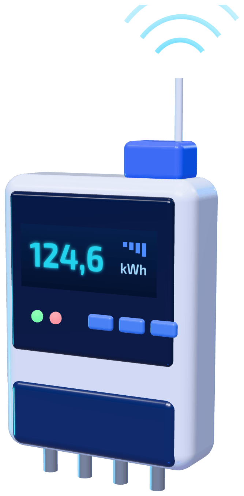
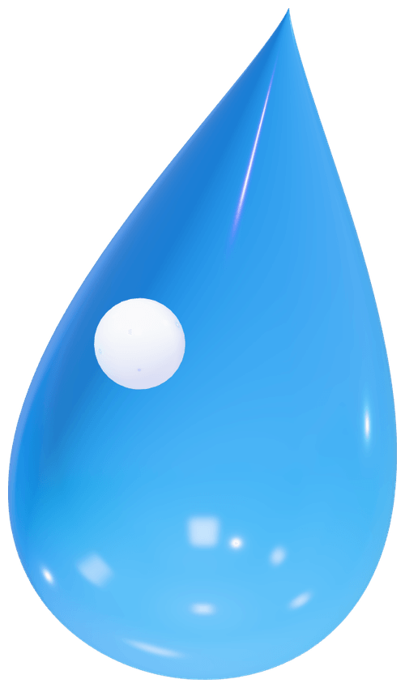
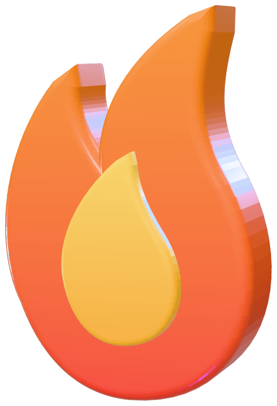
1Cómo funciona: redes, capas y protocolos
2Luz, agua y gas en Colombia y Nariño
3Inteligencia, un proyecto real y retos
Telemetría, telemedida y telecontrol
Medir la red, medir el consumo y actuar sin ir al sitio.
sensors
Telemetría
Mide la red a distancia: caudal, presión, nivel, voltaje.Mira la infraestructura
speed
Telemedida
Lee a distancia el consumo de cada usuario para facturar lo real.Mira al cliente
toggle_on
Telecontrol
Actúa sin ir al sitio: abre una válvula, corta o reconecta.Actúa sobre la red
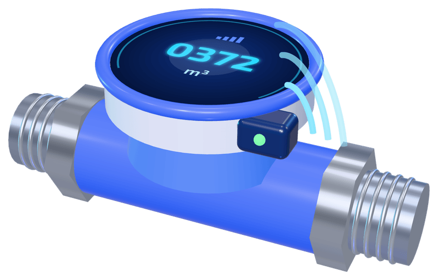
Cómo se comunica el medidor
electric_meterMedidor
Lecturas
Órdenes
dnsEmpresa
AMI conversa en dos sentidos: envía datos y recibe órdenes como corte, reconexión, cambio de tarifa o actualización.
SCADA: el tablero de mando que supervisa y controla la red desde el centro de control.
El viaje de una lectura por OSI y TCP/IP
El IoT no reemplaza lo que vimos en el curso: lo usa capa por capa.
12,4 m³
routerGateway: aquí la trama pasa a TCP/IP
Las 4 capas de un sistema IoT
1Percepción: sensores y medidores
2Red: transporta el dato
3Procesamiento: plataforma y nube
4Aplicación: muestra y actúa
El medidor no habla IP.
Hablar IP gastaría batería. El gateway recibe la trama de radio y la pasa al mundo TCP/IP.
Medios de transmisión y señales inalámbricas
No hay una sola red ideal: depende del servicio y de si el medidor tiene energía.
LoRaWAN
Medio
Radio sub-GHz en banda libre (915–928 MHz en Colombia)
Alcance
2–5 km en ciudad; hasta ~15 km rural con línea de vista
10 m100 m1 km10 km50 km
Escala logarítmica, valores aproximados
Energía
Batería, hasta ~10 años
Uso típico
Medidores de agua y gas; zonas rurales
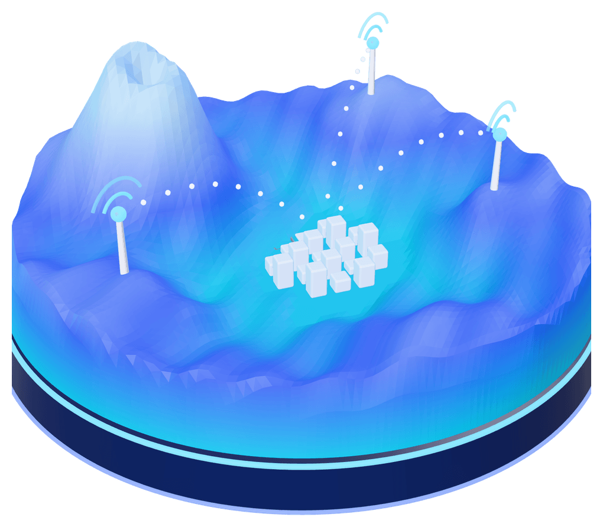
Pasto está en un valle rodeado de montañas. Los gateways van en puntos altos, con línea de vista hacia barrios y veredas. A menor frecuencia, más alcance y mejor paso por muros.
Del gateway al centro de control
Una orden de cerrar una válvula no puede esperar detrás de diez mil lecturas.
Medidores y sensoresMiden en campo
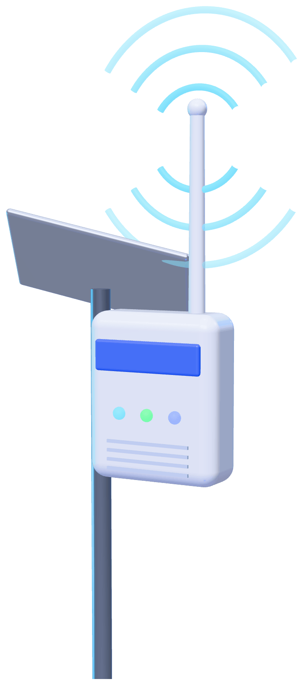
GatewaysReciben la radio
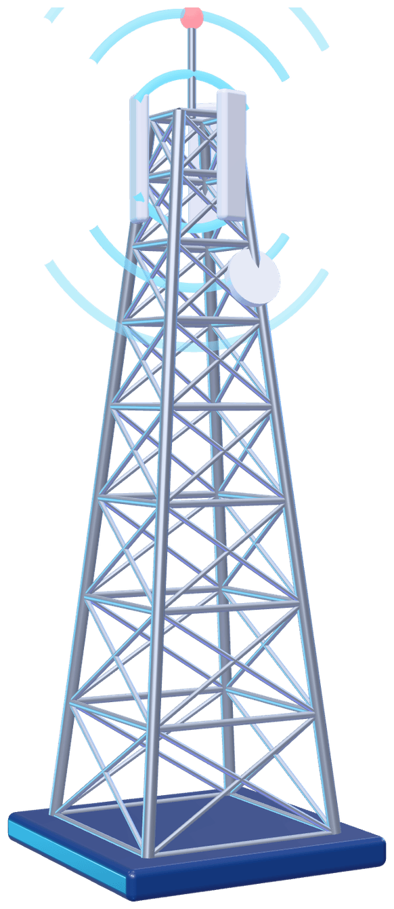
Fibra o 4GEnlace de retorno
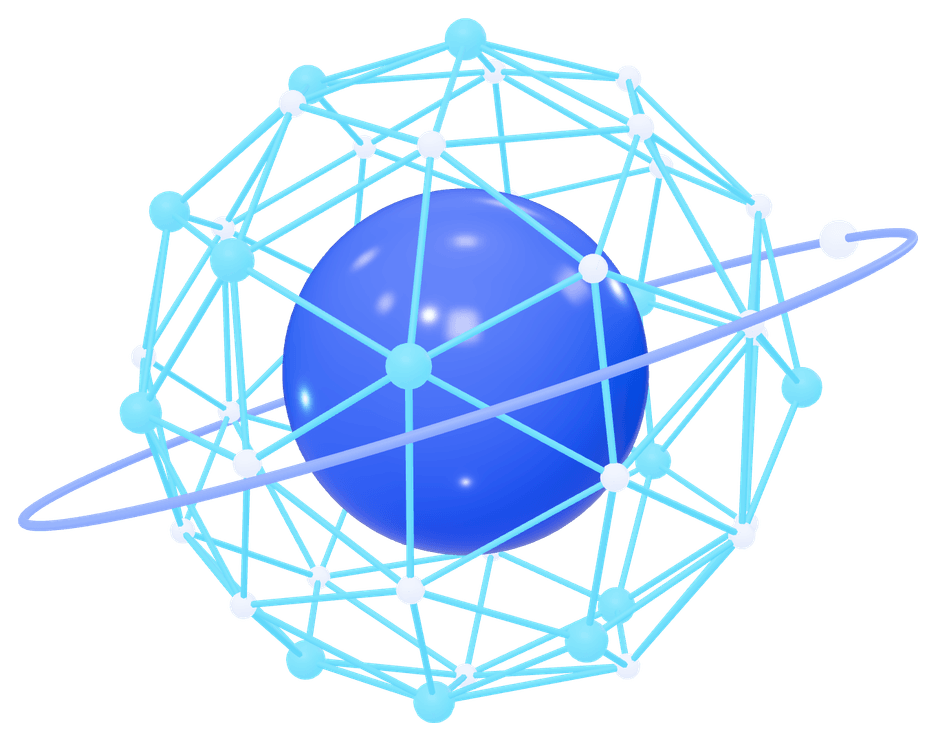
WAN MPLSRed propia de la empresa
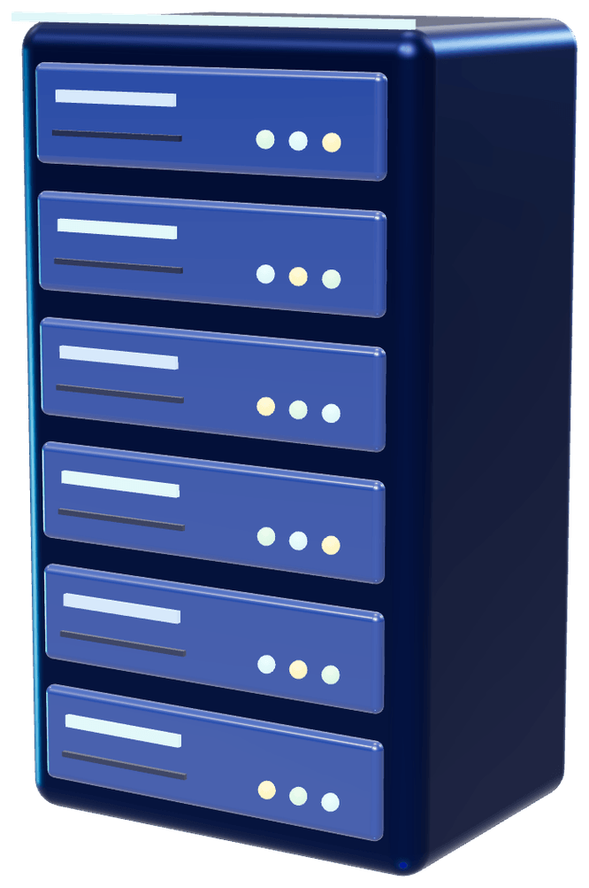
Centro de controlSCADA, datos y facturación
Los puntos azules son lecturas que viajan hacia el centro de control.
Antes
Frame Relay
WAN de capa 2 con circuitos virtuales permanentes. Unió sedes y SCADA en los años 90 y 2000.
Hoy
MPLS
Reenvía por etiquetas, separa el tráfico en VPN y da prioridad (QoS) al telecontrol sobre las lecturas.
Protocolos que mueven el dato
MQTTPublicar y suscribir sobre TCP (1883; 8883 con TLS)
CoAPLiviano, sobre UDP
DLMS/COSEMIEC 62056, datos de medidores
Modbus, DNP3Supervisión SCADA
Todo va cifrado: LoRaWAN usa AES-128 con dos llaves (red y aplicación), TLS hacia la nube y VPN separadas en MPLS.
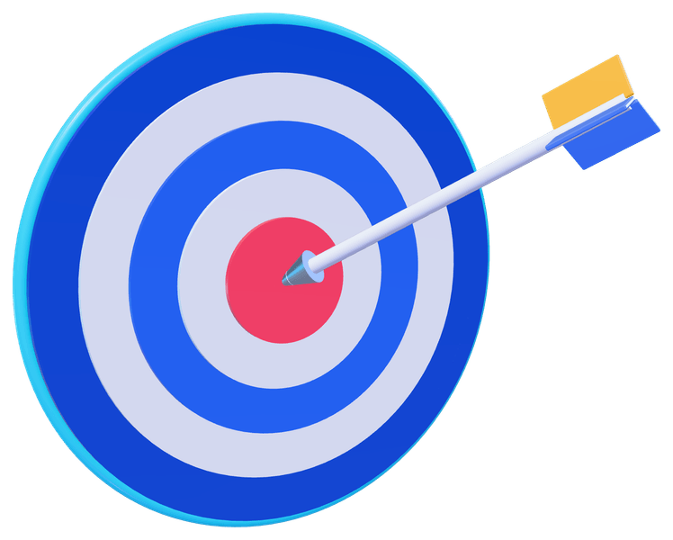
Colombia ya tiene norma y meta
Hay meta y hay reglas. Lo que falta es instalar los medidores.
La brecha
≈1 %
Avance estimado en 2024, unos 200.000 medidores
75 %
Meta de MinEnergía para 2030
Quién regula
CREGEnergía y gas
CRAAgua; definió el IANC en 1995
SuperserviciosVigila a las empresas
SICMetrología de los medidores
MinEnergíaPolítica y metas
Fuentes: Res. MinEnergía 40072 de 2018 y 40483 de 2019; Ley 2099 de 2021; Res. CREG 101 001 de 2022; Res. SIC 40972 de 2025; Res. CRA 12 de 1995; avance: Asocodis, citado por Portafolio y una tesis de la U. del Rosario (2024).
Luz: medición inteligente y el caso CEDENAR
Un medidor AMI avisa cuando se va la luz y deja ver el consumo hora a hora.
scheduleLectura remota hora a hora
power_settings_newCorte y reconexión remotos
query_statsDetección de pérdidas y fraude
notificationsAviso automático de fallas
paymentsPrepago y tarifas por horario
solar_powerAutogeneración solar
Balance de energía en una cuadra (ejemplo)
Sale del transformador1.000 kWh
Suman las casas1.000 kWh
Diferencia0 %
homehomehomehomehomehomehomehomehome
Si lo que sale del transformador no cuadra con la suma de las casas, hay una pérdida o una conexión ilegal en esa cuadra.
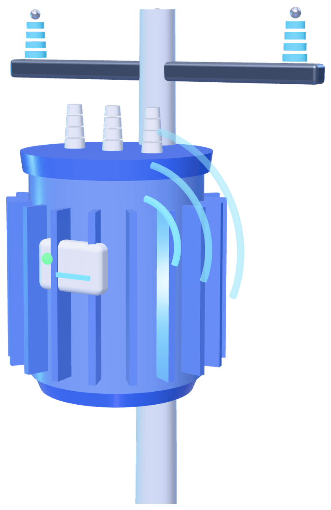
432.490usuarios atendía CEDENAR en 2018
34 de 64municipios de Nariño con cobertura eléctrica por debajo del promedio nacional (DNP, 2025)
En 2024, seis municipios del Pacífico nariñense pasaron más de una semana sin energía. La Universidad de Nariño ya diseñó un prototipo propio de medidor inteligente (proyecto ALTERNAR).
Fuentes: Superservicios, evaluación integral de CEDENAR 2019 (datos de 2018); DNP, 2025; Blu Radio, 2024; Universidad de Nariño. El balance de la cuadra es un ejemplo ilustrativo.
Agua: telemetría de la fuente al grifo
El agua no contabilizada, la que se trata pero no se cobra, puede rondar el 41 % en ciudades intermedias.
waterFuenteCaudal y lluvia
factoryPlantaTurbiedad, cloro y pH
databaseTanquesNivel
conversion_pathRedPresión y caudal por sector
homeCasaMedidor ultrasónico con válvula
Caudal de un sector durante 24 horas
Ejemplo ilustrativo. A las 3 a. m. casi nadie abre la llave: si el sector sigue consumiendo, hay una fuga.
0,19 %IRCA de EMPOPASTO, el índice de riesgo de calidad del agua
99,75 %continuidad del servicio en Pasto
350.000+habitantes abastecidos por EMPOPASTO (dato de 2017)
76,1 %cobertura de acueducto en Nariño al cierre de 2025
De la fuente al grifo. En cada etapa hay un sensor que reporta en línea.
Fuentes: Value and Risk Rating vía HSB Noticias (2025); Semana (2017); MinVivienda vía Portafolio; CRA, Res. 12 de 1995; revista DYNA, U. Nacional (agua no contabilizada en ciudades intermedias).
Gas: el caso único de Pasto
Pasto no está conectada al gasoducto nacional: el gas natural llega por carretera.
55.000+hogares con gas natural de Alcanos en 2023, la única red de gas natural en Nariño
Marzo 2025un derrumbe en la Panamericana frenó los carrotanques desde el 13; Alcanos anunció el regreso del gas para el 19
gas_meterConsumo con medidor de pulsos o ultrasónico
speedPresión y caudal en estaciones
warningFugas, con sensores de metano o CO
propane_tankNivel de los tanques de GLP
valveVálvula de corte remota
local_shippingGPS e inventario de carrotanques
38 hde inventario en las estaciones (simulación)
Con sensores de presión y volumen, la empresa sabe cuántas horas de gas le quedan.
Municipios con GLP por redes o proyectos en curso: Catambuco, El Tambo, Buesaco, Cumbal, Ipiales y otros; meta de la Gobernación 2020-2023: 25 % de hogares con gas por redes. Fuentes: Alcanos vía Portafolio (2023); HSB Noticias y Diario del Sur (2025); Gobernación de Nariño; CREG.
Los tres servicios, lado a lado
Miden cosas distintas, pero la arquitectura es la misma: sensor, red, plataforma y aplicación.
LuzCEDENAR
Qué se mide
kWh, voltaje e interrupciones
Red adecuada
PLC o RF Mesh en ciudad; celular o LoRa en zona rural
Beneficio clave
Menos pérdidas y fallas ubicadas rápido
Reto local
Geografía y zonas apartadas del Pacífico
El dato que más ayuda
Balance del transformador por cuadra
AguaEMPOPASTO
Qué se mide
m³, presión, caudal, cloro y turbiedad
Red adecuada
LoRaWAN o NB-IoT, porque el medidor funciona a batería
Beneficio clave
Menos agua no contabilizada y fugas detectadas
Reto local
Cajillas bajo tierra que atenúan la señal
El dato que más ayuda
Caudal mínimo de las 3 a. m.
GasAlcanos y distribuidoras de GLP
Qué se mide
m³, presión, fugas e inventario
Red adecuada
LoRaWAN o NB-IoT, más celular y GPS en la flota
Beneficio clave
Seguridad y continuidad del suministro
Reto local
Dependencia de la vía Panamericana
El dato que más ayuda
Horas de inventario en las estaciones
battery_fullIdea fuerza: el medidor de luz tiene energía; los de agua y gas no. Por eso usan redes de bajo consumo a batería.
IA: de datos a decisiones
El valor no está en el sensor, sino en lo que se hace con sus datos.
Consumo de agua de una casa durante una semana
Ejemplo ilustrativo. El modelo aprende cómo consume esa casa y marca lo que se sale del patrón.
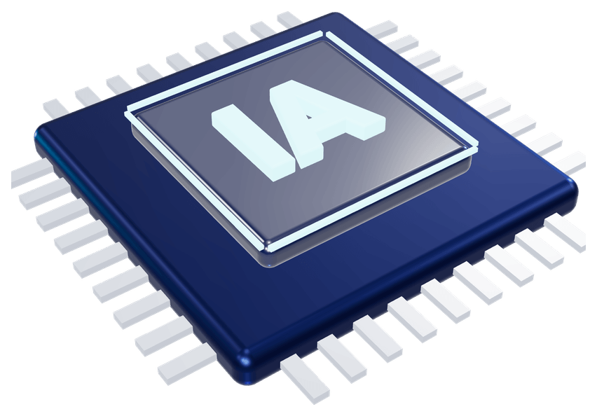
trending_upPronóstico de demandaCuánta agua bombear o cuánta energía comprar mañana
query_statsDetección de anomalíasFugas, fraude o medidores dañados
buildMantenimiento predictivoBombas y transformadores avisan antes de fallar
deployed_codeGemelo digitalCopia virtual de la red con datos en tiempo real
memoryEdge AIEl gateway filtra y analiza antes de enviar
powerNILMQué electrodoméstico consume más, desde la curva total
Industria 4.0: una planta o una subestación es sensores, PLC, SCADA y analítica trabajando juntos.
La IA es tan buena como sus datos. Primero la red confiable, después la inteligencia.
Una red, muchos servicios
Así se conecta este tema con las exposiciones de FinTech, salud y agricultura inteligente.
Red IoT compartida
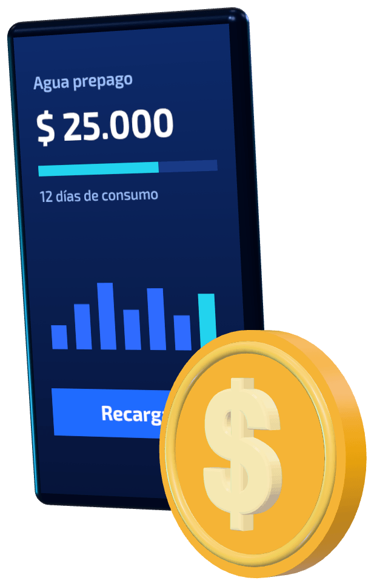
FinTech y banca
Prepago de agua y energía, que EPM ya usa; pagos digitales y facturas por consumo real.
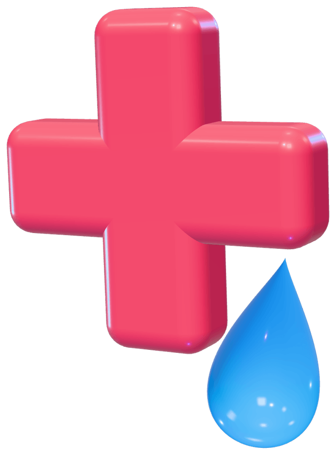
Health Care
Cloro residual y turbiedad en línea: la calidad del agua es salud pública. Energía confiable para hospitales.
Agricultura inteligente
La misma red LoRa que lee un medidor en la vereda lleva datos de humedad del suelo y riego.
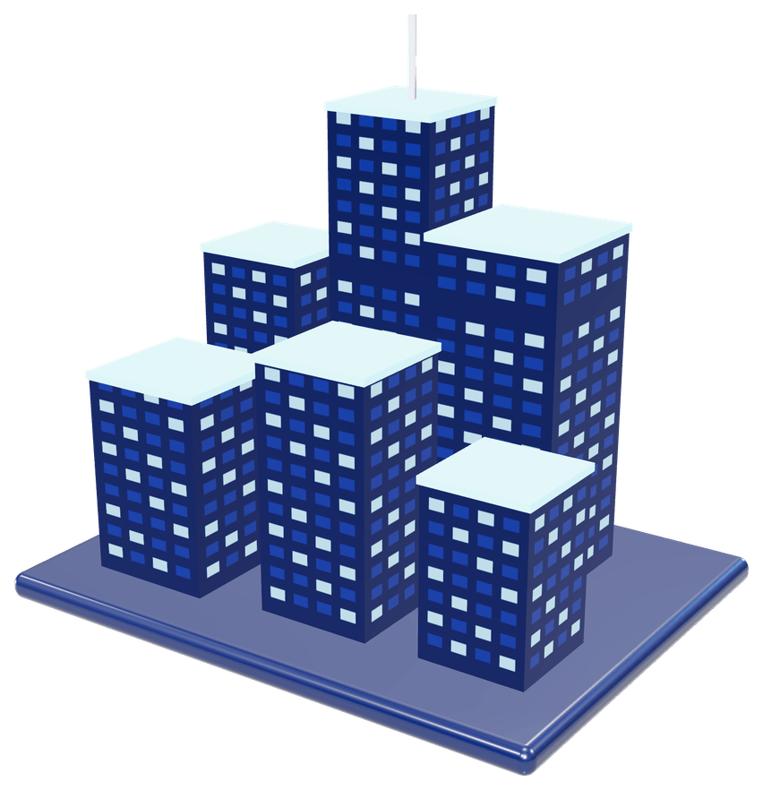
Ciudad inteligente
Alumbrado público, aseo y movilidad pueden usar la misma infraestructura.
Esa es la idea de la computación ubicua: una infraestructura que muchos servicios comparten.
Propuesta: partir del proyecto MIA
Medición Inteligente de Agua, del Acueducto de Bogotá: ya existe y sus medidores reportan solos cada 30 minutos.
Las 4 capas de un sistema IoT, en MIA
Octubre de 2022Arranca con dos medidores en la Fundación Santa Fe; también el Hotel Grand Hyatt y el Centro Empresarial 156.
Noviembre de 2023Ya son 415 grandes organizaciones: empresas, hoteles, hospitales, industrias y universidades.
Mediados de 2024Más de 900 usuarios, según Watertech, proveedor del proyecto.
905grandes clientes de Bogotá y Soacha en la primera etapa
48lecturas al día por medidor
$6.768 Mde pesos: medidores, datos, obras e instalación
Qué tomaríamos de MIA para Pasto
Empezar por los mayores consumidores, no casa por casa
Usar la red celular donde haya señal y LoRaWAN donde no llegue
Darle al cliente sus curvas y alarmas para detectar fugas
Otro caso real: AMI Aguas de EPM, piloto de 12 meses con unos 1.100 usuarios en Medellín, anunciado en 2026.
Fuentes: Acueducto de Bogotá, boletines de octubre de 2022 y noviembre de 2023; Alcaldía de Bogotá; Watertech (2024); Minuto30 (AMI Aguas, 2026).
Retos y cómo se manejan
No es una tecnología perfecta. Estos son los retos reales y la respuesta a cada uno.
RetoPor qué importaCómo se maneja
payments
Costo y quién paga
La Corte tumbó en 2022 la prohibición de cobrar el medidor; en 2024 aún no había regla clara de quién paga
Despliegue gradual y estudio costo-beneficio obligatorio
groups
Desconfianza
«Me van a cobrar más»: ha habido rechazo, por ejemplo en Cartagena y Barranquilla
Pedagogía: el usuario ve su consumo diario y reclama con datos
privacy_tip
Privacidad
La curva horaria revela a qué hora sale uno de la casa
Ley 1581 de 2012, autorización, anonimización y datos por sector
shield
Ciberseguridad
Un corte remoto masivo sería grave
AES y TLS, comandos autenticados y VPN separadas en MPLS
landscape
Geografía rural
Montaña, distancia y poca señal celular en Nariño
LoRaWAN de largo alcance, gateways solares y satélite donde no hay otra opción
extension
Interoperabilidad
Medidores de una marca que no hablan con otra
Estándares abiertos: LoRaWAN, DLMS/COSEM y MQTT
recycling
Baterías y residuos
Miles de baterías por cambiar
Equipos de bajo consumo, cerca de 10 años, y plan de reciclaje
Seguridad desde el diseño. Cifrado, órdenes autenticadas y datos por sector.
Conclusiones
El IoT en servicios públicos usa, capa por capa, lo que vimos en el curso: OSI, TCP/IP, medios, LoRa y MPLS.
Colombia ya tiene norma y meta, 75 % a 2030, pero en 2024 el despliegue real iba cerca del 1 %.
Cada servicio necesita su red: la luz puede usar el cable; el agua y el gas, redes a batería.
En Pasto, el gas que llega por carretera hace que la telemetría sea cuestión de continuidad.
La IA solo aporta si primero hay datos confiables.
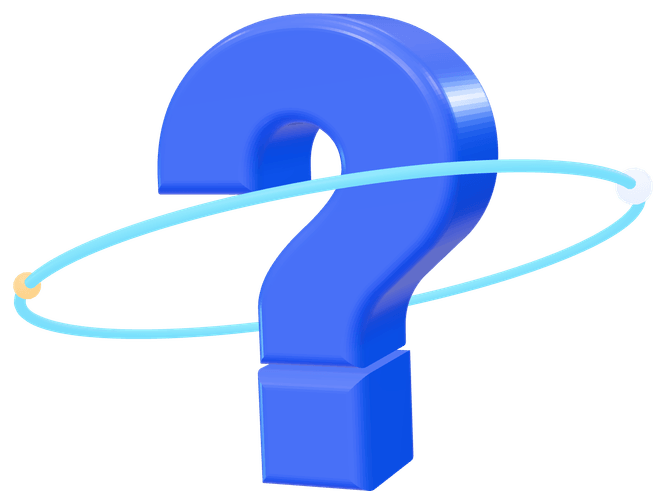
«El mejor lector de contadores es el que nunca tiene que salir a la calle.»